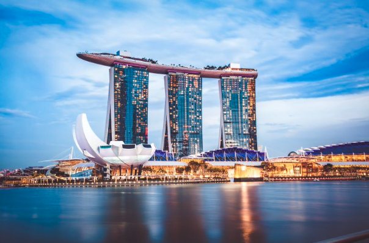

These are the places I would like to visit!
Greece has the longest coastline in Europe and is the southernmost country in Europe. The mainland has rugged mountains, forests, and lakes, but the country is well known for the thousands of islands dotting the blue Aegean Sea to the east, the Mediterranean Sea to the south, and the Ionian Sea to the west.
To learn more, click here! Greece!
Hawaii (Hawaiian: Hawai'i) is a group of volcanic islands in the central Pacific Ocean. The islands lie 2,397 miles from San Francisco, California, to the east and 5,293 miles from Manila, in the Philippines, to the west. The capital is Honolulu, located on the island of Oahu.
To learn more, click here! Hawaii!

Singapore is a city, a nation and a state. It is about 275 square miles, smaller than the State of Rhode Island, and inhabited by five million people from four major communities; Chinese (majority), Malay, Indian and Eurasian.
To learn more, click here! Singapore!
France, the largest country in Western Europe, has long been a gateway between the continent's northern and southern regions. Its lengthy borders touch Germany and Belgium in the north; the Atlantic Ocean in the west; the Pyrenees Mountains and Spain in the south.
To learn more, click here! France!
The Description of Egypt was a series of publications, appearing first in 1809 and continuing until the final volume appeared in 1829, which aimed to comprehensively catalog all known aspects of ancient and modern Egypt as well as its natural history.
To learn more, click here! Egypt!